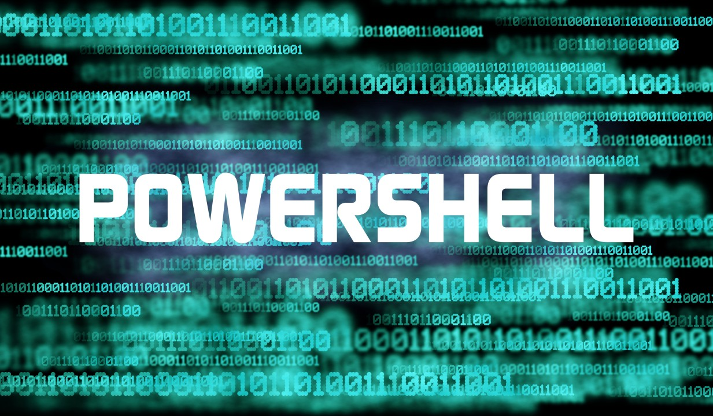

TryHackMe
Blog
Recon, exploiting a vulnerable web app, and working up to root on the Blog box.
Read the write-up
TryHackMe
LazyAdmin
Enumerating a vulnerable CMS, landing a shell, and escalating to root.
Read the write-up
TryHackMe
PS Empire
Windows enumeration, exploitation, and post-exploitation with PowerShell Empire.
Read the write-up
TryHackMe
Reversing ELF
Cracking a series of Linux ELF binaries with file, strings, and dynamic analysis.
Read the write-up